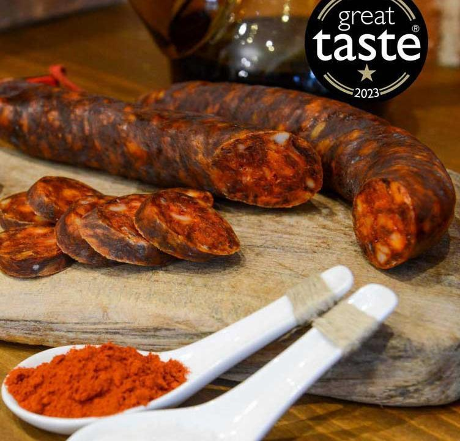
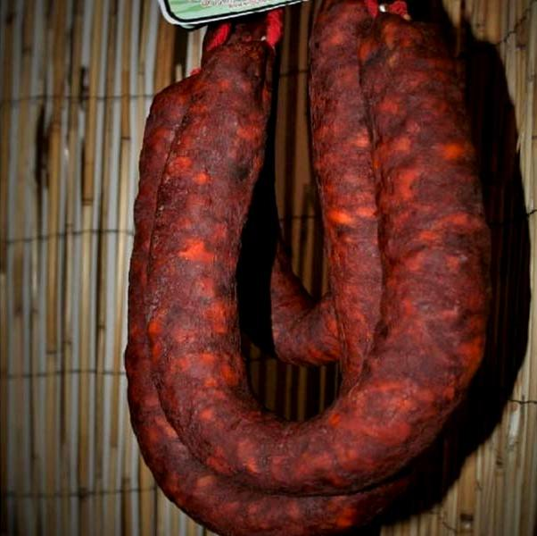
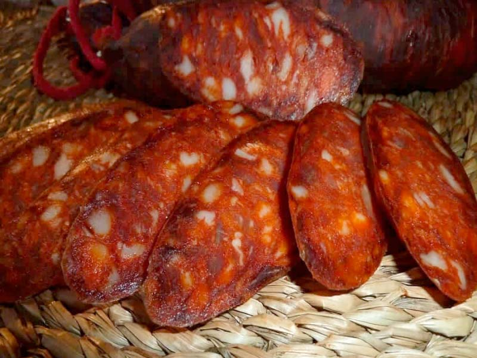
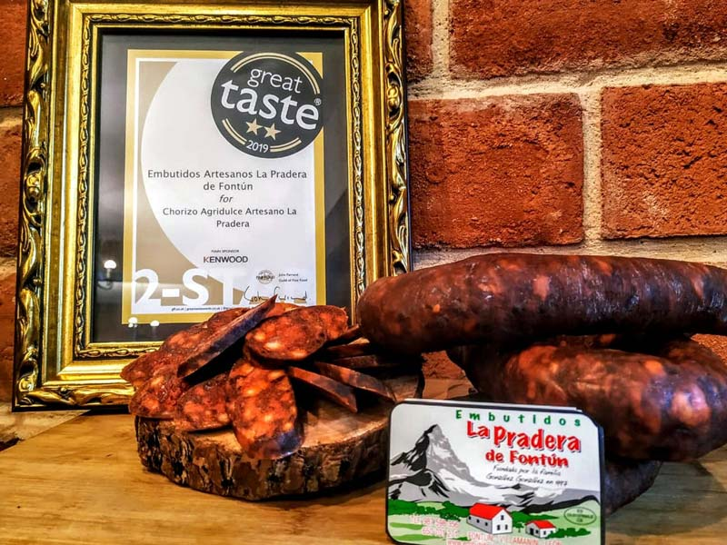

Si eres de los que disfrutan con un poco de picante. Si te gusta el sabor auténtico del chorizo, el que tu abuela tenía en el cajón de la mesa de la cocina, el que nada más olerlo te transporta a esos momentos de reunión familiar, de vacaciones en el pueblo. Este chorizo picante de La Pradera de Fontún es para ti.
El chorizo de cerdo artesano picante de La Pradera de Fontún es el ejemplo perfecto de "si algo funciona, no lo toques... solo dale chispa". Nació porque los más fieles a su versión agridulce querían un punto extra de intensidad, y la marca ha dado en el clavo: mantienen la base de siempre, con su tripa natural y ese toque de leña de roble, pero metiéndole un pimentón de La Vera picante que es puro espectáculo.
Lo que mola de este chorizo es que se cura a la antigua, aprovechando que están a más de 2.100 metros en plena montaña leonesa, así que solo lo fabrican cuando el frío de verdad aprieta (de octubre a marzo). Es ese tipo de producto artesano que sabe a lo que tiene que saber: a tradición, a Reserva de la Biosfera y a ese picante que engancha desde el primer bocado.


